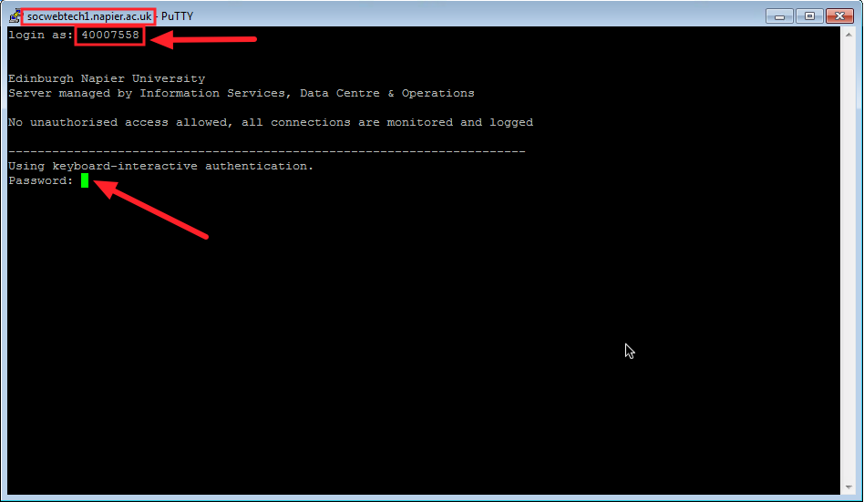

The purpose of this practical is to create a simple website fetching data from a database as described in the lecture.
Modern PHP tools and framework require the use of the command line interface. While PHP-CLI is not installed on the university Windows machines, it is available on socwebtech1.
To use PHP-CLI, you have to connect using SSH. On the university computers, you can use Putty to make an SSH connection. On ZENworks, browse to Faculty of Engineering, Computing and Creative Industries, then School of Computing and find SSH_Putty_Only_(VDS).
Use socwebtech1.napier.ac.uk as hostname and click Open. Then, use your university credentials to connect.

Because socwebtech1 is a Linux based server, when typing your password you will not see anything on screen. That is a security feature with the rationale that anybody walking behind you should not know how many characters your password is made of.
You can now use PHP-CLI on the university server. The first simple command you will use is php -v to have a look at the version of PHP you are using.
You can continue to create and manage your files and folders using WinSCP in the same time, or use the command line interface for everything, in which case you may need to use mkdir, cd and either nano or vim. Please use WinSCP if you do not know Linux well already.
Create a folder for this tutorial, and browse to it using SSH (for instance, if the folder is called tutorial and is located in public_html, use cd public_html/tutorial).
Create a file named index.php, and add the following HTML content.
<!doctype html>
<html>
<head>
<meta charset="utf-8">
<title>Lecturers list</title>
</head>
<body>
<h1>Lecturers list</h1>
</body>
</html>You PHP code to retrieve the data from the database should be set before this HTML block, and some modifications to the HTML must be made to display the information.
Start by adding an array with the lecturer details and a class to contain lecturers details.
<?php
class Lecturer
{
public $firstname;
public $lastname;
public function __construct($firstname, $lastname)
{
$this->firstname = $firstname;
$this->lastname = $lastname;
}
}
$lecturers = [
new Lecturer('test1', 'test1'),
new Lecturer('test2', 'test2'),
];
?>Now, add a table using a foreach on your recently created collection. You are expecting two rows to be displayed.
<table>
<?php foreach ($lecturers as $lecturer): ?>
<tr>
<td>
<?php echo $lecturer->firstname; ?>
</td>
<td>
<?php echo $lecturer->lastname; ?>
</td>
</tr>
<?php endforeach; ?>
<table>You can now move the Lecturer class to another folder (src), and name the file Lecturer.php (as in the PSR4 standard), and use either an include or a PSR4 autoloading with composer as seen during the lecture.
You can access the database (read only) with the following credentials:
Replace your lecturer array with the code to retrieve data from database:
<?php
$mysqli = new mysqli('localhost', 'scott', 'tiger', '40007558');
if ($mysqli->connect_errno) {
header("HTTP/1.1 500 Internal Server Error");
die("Failed to connect to MySQL: {$mysqli->connect_error}");
}
$res = $mysqli->query(
"SELECT id, firstname, lastname, office, phone FROM lecturer"
);
$lecturers = [];
while($row = $res->fetch_assoc()) {
$lecturers[] = new Lecturer(
$row['firstname'],
$row['lastname']
);
}
?>Have a look at the code from lecture 09 (databases) and try other database access methods (PDO and ORM).